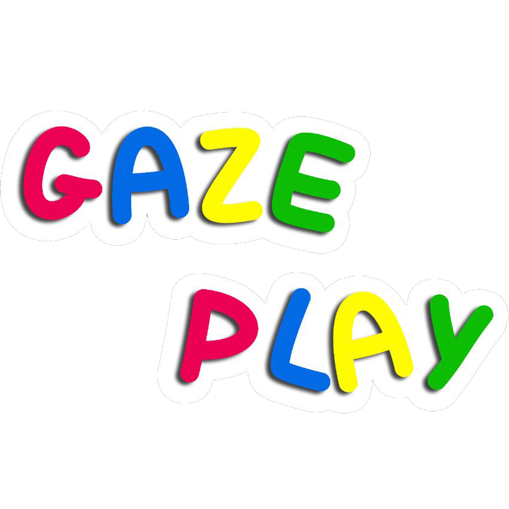

Première étape à l’apprentissage pour la mise en place d’une véritable communication par oculomètre et rassemblant plus d’une soixantaine de mini-jeux sérieux, ce logiciel va permettre aux enfants de comprendre et d’assimiler les conséquences que peuvent avoir leurs actions, et donc leur regard, sur l'ordinateur.
Une plateforme de jeux
-

GazePlay